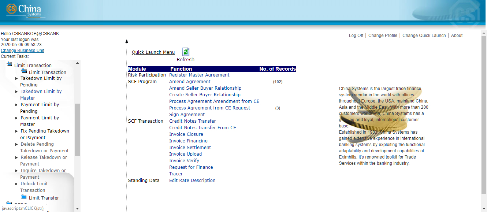

EEV415 Limit Transaction Module

Contents
CHAPTER TWO: LIMIT TRANSACTION FUNCTIONS 16
Introduction to the Limit Transaction Function Group 17
Fix Pending Takedown or Payment 40
Delete Pending Takedown or Payment 43
Release Takedown or Payment 46
Inquire Takedown or Payment 48
Introduction to the Limit Transfer Function Group 55
Add Limit Transfer by Pending 59
Add Limit Transfer by Master 65
Pay Limit Transfer by Pending 71
Pay Limit Transfer by Master 78
Delete Pending Limit Transfer 87
{#section .CS-head1}
EE Documentation Library
EE Documentation Library
The EE Documentation Library lists all available manuals that serve as references on the use of the Eximbills Enterprise system. The documents are categorized into three groups: Core System Manuals, EE Utility References, and Installation Guides.
Core System Manuals
The EE Core System manuals provide information on the setup and configuration of various EE parameters, as well as the implementation of supplementary functionalities supported by the system.
Archiving and Recovery
This manual is a reference to the Archive and Recovery functionality of the EE system. Discussions include the required parameter settings for configuring the relevant functions, as well as examples of how this functionality is used in transaction processes. The archiving functions discussed in this manual are Archive Data, Inquire Archived Data, Restore Archived Data, Delete Archived Data, and End of Month functions.
BIRT Report Engine
This manual discusses the requirements and processes involved in applying the built-in BIRT report engine of EE to build transaction functions that generate BIRT reports and documents. Other functionalities, such as configuring a report batch function and defining rules to attach documents to an outgoing e-mail, are covered as well.
Building a Module
This manual is designed to help new users of EE plan, organize, control, and successfully carry out the implementation of the system. It provides a general description of the different features of EE that enable every bank to build and design business modules according to its processing requirements. This manual discusses how a custom business module in EE can be built and adapted. It includes step-by-step procedures on how to build a module as well as an overview of runtime transaction processing.
Charges and Commissions Reference
This document provides extensive discussions on the setup and usage of the Charges and Commissions component of EE. Instructions include setting up parameters, defining the relevant standing data, and using charge-specific calculation methods.
Data Objects
This manual describes in detail the steps and procedures required in building and utilizing a data object, which is a logical object that has its own attributes and calculation rules. Instructions on customizing the DO screen interface, navigating the data object screen, and using data objects in transaction processes are also provided.
eLOAN Transaction Module
This document provides extensive discussions on EE’s eLOAN sub-system. Topics include eLOAN functions from the eLOAN Transaction Module and the EE Standing Data Module.
FAQs
This document addresses commonly asked questions about the EE system. This includes answers to issues related to browser-side processing, EE Utility, EE database, Security Manager, and other issues that may arise while operating and configuring settings within the EE environment. Some system features and capabilities are discussed as well.
GAPI Integration
This manual is a comprehensive reference guide on setting up the required parameters for sending and receiving GAPI messages. It includes instructions on the configuration of related functionalities and auxiliary operations, as well as discussions on actual transaction processing.
Limit Management Module
This document provides extensive discussions on the Limits sub-system of EE. The manual is divided into two parts:
-
The first part discusses all the browser functions of the Limit Management module.
-
The second part discusses the required parameter settings to integrate Limits settings and data with a business module.
Limit Transaction Module
This document provides extensive discussions on running and using the functions of the Limit Transaction module.
Log Settings
This manual provides instructions on defining EE log settings and configuring parameters to set up log functions. Generating logs on different modes and checking the different log directories are discussed as well.
Multi-Entity Reference
This manual is a guide to the multi-entity structure of the EE system. This includes a discussion on the composition of the system in relation to this structure. EE also supports the use of a single and default domain; a supplementary section is provided for this.
Multi-Language Reference
This manual provides instructions on defining language records and configuring the multi-language settings in the EE Utility and EE browser. With this multi-language functionality, users are able to access the EE system in their preferred language.
Payment Component Reference
This document provides extensive discussions on the setup and usage of the different Payment component types: Payment Terms, Payment Schedule, Payment Instruction Dealer, and Payment Dealer. Topics include parameter settings and Payment-specific calculation methods.
Security Manager
This manual is a comprehensive guide to security management in the EE system. As such, it includes instructions on the setup of user profiles, user functions, business units, business unit functions, user and business unit assignments, and other security-related operations.
Service Level Agreement Reference
This document is a reference to the Service Level Agreement (SLA) functionality of EE the system, which pertains to a group of settings that control the flow of transaction steps and processes. It is divided into two major sections: Basic Data, for the functions used in the creation and maintenance of SLA standing data; and System Operations, for the functions used in SLA enquiry, business task initialization, and end time adjustments. A sample SLA process is also provided.
Standing Data Module
This document discusses the functions for the standing data of the EE system. Among these are rate descriptions, exchange rates, interest rates, account numbers, currencies, weekend data, holiday data, clauses, reference number rules, authorization standing data, and time zone data. Descriptions, input details, and processing steps are included in the function discussions.
Supplementary Functions
This manual is a reference in configuring the parameter settings to define special or supplementary EE functionalities such as the Compliance Check and invoice uploading features.
SWIFT Configuration
This document provides extensive discussions on the primary components required in defining SWIFT messages: the SWIFT template and the SWIFT message rule. The complete parameter settings and external configurations required for enabling EE to exchange messages with the SWIFT network are detailed in comprehensive procedures. This manual is supplemented with sections on SWIFT-related system parameters and miscellaneous functions.
System Administration Functions
This manual is a reference for Super Administrator users of the EE Utility in the configuration and maintenance of the EE environment. Sections of this reference include instructions on the use of specific User Manage and Parameter Manage functions.
System Maintenance Module
This document discusses the functions provided in the System Maintenance module of the EE system. This includes sections on the maintenance processes for daily operations, authorization rule settings, EDI messages, SWIFT messages, XML messages, log files, and documents.
System Reference
This manual is a reference for the following elements provided in the EE Utility for parameterization: security parameters, system parameters, components, server side system methods, calculation methods, and XML Generator items.
Version Control
This manual discusses the settings in maintaining the different versions of parameters.
EE Utility References
The EE Utility set of reference manuals is a guide on the use of the Eximbills Enterprise Utility Workbench, or simply EE Utility. These references discuss every function or feature of the EE Utility and provide instructions on how to operate or use the function in relation to operating and maintaining the EE system and processing a business transaction.
A manual is provided for each major function group of the EE Utility: User Manage, Parameter Manage, System Function, Transaction Function, and Maintenance.
NOTE:
The TSU Parameter Manage function group is comprised of functions used for configuring, managing and maintaining parameters for the TSU (or Open Account) module. For information on the TSU module, refer to the EE Baseline TSU documentation.
EE Utility Reference: User Manager Functions
This manual is a comprehensive guide for the Administrator and Operator user on the use and configuration of the functions belonging to the User Manage function group of the EE Utility. This includes functions for user profiles and audit logs.
EE Utility Reference: Parameter Manager Functions
This manual is a reference on the use and configuration of the functions that belong to the Parameter Manage function group of the EE Utility and that are accessible to Administrator and Operator users. These are system-wide functions used for creating and maintaining system parameters, components, and calculation rules, among others.
EE Utility Reference: System Functions
This manual includes information on the configuration of the functions belonging to the System Function group of the EE Utility. The functions in this group are used to maintain settings that facilitate system-wide tasks and operations; among these are function groups, output devices, protocol managers, and STP settings.
EE Utility Reference: Transaction Functions
This manual provides discussions on the configuration of the functions belonging to the Transaction Function group of the EE Utility. These functions are used for defining and setting up the actual business parameters of transaction functions.
EE Utility Reference: Maintenance Functions
This manual is a comprehensive guide on the use and configuration of the functions belonging to the Maintenance function group of the EE Utility. These functions are used for maintaining the tables, fields, and files that are used in the EE Utility.
Installation Guide
An EE installation guide is a reference on the installation and setup processes of the EE system on a specific application server and database.
Installation Guide WAS 9.0 - Oracle 12c
This is a reference for installing the EE system on WebSphere Application Server Version 9.0.5.5, with an Oracle 12c database. This includes detailed instructions on configuring the components that are required to successfully run EE.
CHAPTER ONE: INTRODUCTION
-
SYSTEM OVERVIEW
-
MANUAL OVERVIEW
System Overview
The Limit Transaction (CZQO) module of the Eximbills Enterprise (EE) system is used to takedown and repay specific credit lines for business transactions without having to go through the normal cycle of the business module.
The main function groups for this module are:
-
Limit Transaction
-
Limit Transfer
NOTE:
This module is generally used to test and simulate limits-related transactions.
Function Access
A user only has access to function groups—and their corresponding transactions—to which he has been given the appropriate rights. The assignment of function access rights, as well as other security settings, is defined through the EE Security Manager.
To run a function: access the module, open the function group, and click on the function name. Example: Limit Transaction > Limit Transaction > Takedown Limit by Master.
Manual Overview
Purpose
This document provides extensive discussions on running and using the functions of the Limit Transaction module.
Audience
This document is a reference specifically for, but not limited to, the following users:
- Browser users tasked to maintain Limits records
Prerequisites
Suggested title before reading this manual:
- EE Limit Management Module
NOTE:
Some features discussed in this manual have been tested and documented based on an older system version. Unless otherwise specified, the overall functionality is the same when recreated in the current version.
CHAPTER TWO: LIMIT TRANSACTION FUNCTIONS
-
INTRODUCTION TO THE LIMIT TRANSACTION FUNCTION GROUP
-
TAKEDOWN LIMIT BY PENDING
-
TAKEDOWN LIMIT BY MASTER
-
PAYMENT LIMIT BY PENDING
-
PAYMENT LIMIT BY MASTER
-
FIX PENDING TAKEDOWN OR PAYMENT
-
DELETE PENDING TAKEDOWN OR PAYMENT
-
RELEASE TAKEDOWN OR PAYMENT
-
INQUIRE TAKEDOWN OR PAYMENT
-
UNLOCK LIMIT TRANSACTION
Introduction to the Limit Transaction Function Group
The Limit Transaction function group consists of functions for creating and maintaining takedown transactions and payments of takedowns.
It consists of the following functions:
-
Takedown Limit by Pending
-
Takedown Limit by Master
-
Payment Limit by Pending
-
Payment Limit by Master
-
Fix Pending Takedown or Payment
-
Delete Pending Takedown or Payment
-
Release Takedown or Payment
-
Inquire Takedown or Payment
-
Unlock Limit Transaction
NOTE:
Depending on the system version, the catalog screen of each function may also provide the following buttons:

i. Catalog Config - This is used for selecting which fields are to be displayed in the catalog and which ones are to be included for exporting to a file.
ii. Print - This is used for printing selected records or the entire catalog page.
iii. Save as Excel - This is used for exporting the entire catalog page, or selected records, to an Excel file.
iv. Save as PDF - This is used for exporting the entire catalog page, or selected records, to a PDF file.
v. Save as PDF - This is used for exporting the entire catalog page, or selected records, to a PDF file.
Takedown Limit by Pending
This function is used for creating a takedown transaction. Records that are processed with this function require the Release process through the Release Takedown or Payment function.
When the transaction is confirmed, the system checks for the validity of the transaction:
-
The transaction amount must be within the available credit line.
-
The credit line must be within the validity period. The value date and due date of the transaction are checked against the validity period of the credit line involved: the transaction value date and due date must fall within the start date and expiry date of the credit line.
When the transaction does not pass these checks, the system displays a warning message.
NOTE:
If the customer has a defined shared limit, the customer may borrow from other member facilities if the transaction amount has exceeded the available credit line. The amount that a customer can borrow from another credit line must be within the available share limit balance of the defined shared limit. Refer to the EE Limit Management Module for more information on shared limits.

Figure 2. Takedown Limit by Pending Function
Configuration
This function provides the following fields.
-
Main Ref No - This is the unique reference number for this takedown transaction. This is a protected field.
-
Customer Id - Specify the Id of the Customer. The lookup button that accompanies this field may be used to retrieve the Id from the Customer table. This is a mandatory field.
-
Related Customer Id – When there is a related customer for the present customer, the system automatically retrieves the information if the associated Id field is updated. If there is no related customer, this field defaults to the indicated Customer Id value. This is a mandatory field.
-
Sublimit Name – Specify the name of the sub-limit that is to be used in this transaction. The lookup button that accompanies this field may be used to locate the Sub-limit Description record. This is a mandatory field.
-
Facility Type – Specify the facility type that is to be used in this transaction. The lookup button that accompanies this field may be used to locate the Facility Type record. This is a mandatory field.
-
Advance Amount – Specify the transaction or takedown amount. This amount must be less than the available balance of the customer, sub-limit or facility type. This is a mandatory field.
-
Currency Code – Select the currency of the transaction amount from the dropdown list. This is a mandatory field.
-
Value Date – Specify the value date of this takedown transaction. The date may be defined using the dropdown calendar function that accompanies this field. This is a mandatory field.
-
Due Date – Specify the due date of the transaction. The date may be defined using the dropdown calendar function that accompanies this field. This is a mandatory field.
Procedure
- Run the following function:
Limit Transaction > Limit Transaction > Takedown Limit by Pending.

- The Takedown Limit by Pending function screen is displayed.
Specify the relevant information.

- Click on the Confirm button on the toolbar.

- The Transaction Completed screen is displayed.
To view the details of the transaction, click on the GAPI button.
To add another record, click on the Continue option.
To exit the function, click on the Cancel button.
NOTE:
To view the Limits information of the record, click on the LMTS-INFO button. The Limits details are displayed on another window.

Takedown Limit by Master
This function is used for creating a takedown transaction. Records that are processed with this function do not require the Release process (through the Release Takedown or Payment function); transactions are automatically posted to the master file.
When the transaction is confirmed, the system checks for the validity of the transaction:
-
The transaction amount must be within the available credit line.
-
The credit line must be within the validity period. The value date and due date of the transaction are checked against the validity period of the credit line involved: the transaction value date and due date must fall within the start date and expiry date of the credit line.
When the transaction does not pass these checks, the system displays a warning message.
NOTE:
If the customer has a defined shared limit, the customer may borrow from other member facilities if the transaction amount has exceeded the available credit line. Refer to the EE Limit Management Module for more information on shared limits.

Figure 2. Takedown Limit by Master Function
Configuration
This function provides the following fields.
-
Main Ref No - This is the unique reference number for this takedown transaction. This is a protected field.
-
Customer Id - Specify the Id of the Customer. The lookup button that accompanies this field may be used to retrieve the Id from the Customer table. This is a mandatory field.
-
Related Customer Id - When there is a related customer for the present customer, the system automatically retrieves the information if the associated Id field is updated. If there’s no related customer, this field defaults to the indicated Customer Id value. This is a mandatory field.
-
Sublimit Name - Specify the name of the sub-limit that is to be used in this transaction. The lookup button that accompanies this field may be used to locate the Sub-limit Description record. This is a mandatory field.
-
Facility Type - Specify the facility type that is to be used in this transaction. The lookup button that accompanies this field may be used to locate the facility type record. This is an mandatory field.
-
Advance Amount - Specify the transaction or takedown amount. This amount must not be less than the available balance of the customer, sub-limit or member facility. This is a mandatory field.
NOTE:
If the selected customer, sub-limit, or facility has corresponding Combined or Limit Settings, the limit defined in these settings are considered when the system runs a validation of the amount specified in this field.
For information on configuring Combined and Limit settings, see the discussion on the Combined & Shared Limit function group in the EE Limit Management Module documentation*.*
-
Currency Code - Select the currency of the transaction amount from the dropdown list. This is a mandatory field.
-
Value Date - Specify the value date of this takedown transaction. The date may be defined using the dropdown calendar function that accompanies this field. This is a mandatory field.
-
Due Date - Specify the due date of the transaction. The date may be defined using the dropdown calendar function that accompanies this field. This is a mandatory field.
Procedure
1. Run the following function:
Limit Transaction > Limit Transaction > Takedown Limit by Master.

2. The Takedown Limit by Master function screen is displayed. Specify the relevant information.

3. Click on the Confirm button on the toolbar.

4. The Transaction Completed screen is displayed.
To view the details of the transaction, click on the GAPI button.
To add another record, click on the Continue option.
To exit the function, click on the Cancel button.
NOTE:
To view the Limits information of the record, click on the LMTS-INFO button. The Limits details are displayed in another window.

Payment Limit by Pending
This function is used for processing payments of takedowns. Records that are processed with this function require the Release process through the Release Takedown or Payment function.
| +——————————-+ |
|---|
 |
| ————————— |
| +——————————-+ |
| Figure 2. Payment Limit by Pending Function |
Configuration
This function provides the following fields.
-
Main Ref No - This is the unique reference number for this transaction. This pertains to the reference number of the takedown that is being paid. This is a protected field.
-
Customer Id - Specify the Id of the Customer. The lookup button that accompanies this field may be used to retrieve the Id from the Customer table. This is a mandatory field.
-
Related Customer Id - When there is a related customer for the present customer, the system automatically retrieves the information if the associated Id field is updated. If there’s no related customer, this field defaults to the indicated Customer Id value. This is a mandatory field.
-
Sublimit Name - Specify the name of the sub-limit that is to be used in this transaction. The lookup button that accompanies this field may be used to locate the Sub-limit Description record. This is a mandatory field.
-
Facility Type - Specify the facility type that is to be used in this transaction. The lookup button that accompanies this field may be used to locate the facility type record. This is an mandatory field.
-
Advance Amount - Specify the amount to be paid. The amount should be equal to or less than the original takedown amount. This is a mandatory field.
NOTE:
If the selected customer, sub-limit, or facility has corresponding Combined or Limit Settings, the limit defined in these settings are considered when the system runs a validation of the amount specified in this field.
For information on configuring Combined and Limit settings, see the discussion on the Combined & Shared Limit function group in the EE Limit Management Module documentation.
-
Currency Code - Select the currency of the transaction amount from the dropdown list. This is a mandatory field.
-
Value Date - Specify the value date of this payment transaction. The date may be defined using the dropdown calendar function that accompanies this field. This is a mandatory field.
NOTE:
The value date must be within the validity period of the customer, sub-limit, or member facility.
- Due Date - Specify the due date of the payment. The date may be defined using the dropdown calendar function that accompanies this field. This is a mandatory field.
NOTE:
The due date must be within the validity period of the customer, sub-limit, or member facility.
Procedure
- Run the following function:
Limit Transaction > Limit Transaction > Payment Limit by Pending.
- The Payment Limit by Pending function catalog screen is displayed. To create the filter criteria for displaying records, specify the value for the MAIN REF NO field. Click on the Next button.

- Select the relevant record from the list that is displayed. Click on the Next button.
- The Payment Limit by Pending function screen is displayed. Specify the relevant information
- Click on the Confirm button on the toolbar.

- The Transaction Completed screen is displayed.
To view the details of the transaction, click on the GAPI button.
To process another record, click on the Continue option.
To exit the function, click on the Cancel button.
NOTE:
To view the Limits information of the record, click on the LMTS-INFO button. The Limits details are displayed in another window.
Payment Limit by Master
This function is used for processing payments of takedowns. Records that are processed with this function do not require the Release process through the (Release Takedown or Payment function); transactions are automatically posted to the master file.

Figure 2. Payment Limit by Master Function
Configuration
This function provides the following fields.
-
Main Ref No - This is the unique reference number for this transaction. This pertains to the reference number of the takedown that is being paid. This is a protected field.
-
Customer Id - Specify the Id of the Customer. The lookup button that accompanies this field may be used to retrieve the Id from the Customer table. This is a mandatory field.
-
Related Customer Id - When there is a related customer for the present customer, the system automatically retrieves the information if the associated Id field is updated. If there’s no related customer, this field defaults to the indicated Customer Id value. This is a mandatory field.
-
Sublimit Name - Specify the name of the sub-limit that is to be used in this transaction. The lookup button that accompanies this field may be used to locate the Sub-limit Description record. This is a mandatory field.
-
Facility Type - Specify the facility type that is to be used in this transaction. The lookup button that accompanies this field may be used to locate the Facility Type record. This is a mandatory field.
-
Advance Amount - Specify the amount to be paid. The amount should be equal to or less than the original takedown amount. This is a mandatory field.
-
Currency Code - Select the currency of the transaction amount from the dropdown list. This is a mandatory field.
-
Value Date - Specify the value date of this payment transaction. The date may be defined using the dropdown calendar function that accompanies this field. This is a mandatory field.
NOTE:
The value date must be within the validity period of the customer, sub-limit, or member facility.
- Due Date - Specify the due date of the transaction. The date may be defined using the dropdown calendar function that accompanies this field. This is a mandatory field.
Procedure
- Run the following function:
Limit Transaction > Limit Transaction > Payment Limit by Master.

-
The Payment Limit by Master function catalog screen is displayed.
To create the filter criteria for displaying records, specify the value for the MAIN REF NO field.
Click on the Next button.

- Select the relevant record from the list that is displayed. Click on the Next button.
- The Payment Limit by Master function screen is displayed. Specify the relevant information.

- Click on the Confirm button on the toolbar.

- The Transaction Completed screen is displayed.
To view the details of the transaction, click on the GAPI button.
To process another record, click on the Continue option.
To exit the function, click on the Cancel button.
NOTE:
To view the Limits information of the record, click on the LMTS-INFO button. The Limits details are displayed in another window.
 {width="4.330189195100613in”
height="3.8976870078740156in”}
{width="4.330189195100613in”
height="3.8976870078740156in”}
Fix Pending Takedown or Payment
This function is used for correcting or modifying a pending Limits takedown or payment transaction. The original transaction screen is displayed for modifying the record.
Records that are processed with this function require the Release process through the Release Takedown or Payment function.
Do the following . . .
+———————–+———————–+———————–+ | 1. Run the | |  | | | | | | Limit Transaction > | | | | Limit Transaction > | | | | Fix Pending Takedown | | | | or Payment. | | | +———————–+———————–+———————–+ | | | | +———————–+———————–+———————–+ | 2. The Fix Pending | |  | | function catalog | | | | screen is | | | | displayed. | | | | | | | | To create the filter | | | | criteria for | | | | displaying records, | | | | specify the value for | | | | the MAIN REF NO | | | | field. | | | | | | | | Click on the Next | | | | button. | | | +———————–+———————–+———————–+ | | | | +———————–+———————–+———————–+ | 3. Select the | |  | | from the list that | | | | is displayed. Click | | | | on the Next button. | | | | | | | | [NOTE:] | | | | | | | | | | | | To check whether the | | | | record has been | | | | previously refused, | | | | click on the | | | | Rej-reason button. | | | | The relevant | | | | information, such as | | | | the reason for | | | | refusal, is displayed | | | | on another window. | | | +———————–+———————–+———————–+ | | | | +———————–+———————–+———————–+ | 4. The Fix Pending | |  | | function screen is | | | | displayed. | | | | | | | | Modify the | | | | information as | | | | required. | | | +———————–+———————–+———————–+ | | | | +———————–+———————–+———————–+ | 5. Click on the | |  | | the toolbar. | | | +———————–+———————–+———————–+ | | | | +———————–+———————–+———————–+ | 6. The Transaction | |  | | displayed. | | | | | | | | To view the details | | | | of the transaction, | | | | click on the GAPI | | | | button. | | | | | | | | To edit another | | | | record, click on the | | | | Continue option. | | | | | | | | To exit the function, | | | | click on the Cancel | | | | button. | | | +———————–+———————–+———————–+ | | | | +———————–+———————–+———————–+ | **[NOTE:]{.underline} | |  | | | | | | To view the Limits | | | | information of the | | | | record, click on the | | | | LMTS-INFO button. The | | | | Limits details are | | | | displayed in another | | | | window. | | | +———————–+———————–+———————–+
Delete Pending Takedown or Payment
This function is used for deleting a pending Limits takedown or payment transaction. This does not require the release process. Once a record is deleted through this function, the transaction is also deleted from the database.
Do the following . . .
+———————–+———————–+———————–+ | 1. Run the | |  | | | | | | Limit Transaction > | | | | Limit Transaction > | | | | Delete Pending | | | | Takedown or Payment. | | | +———————–+———————–+———————–+ | | | | +———————–+———————–+———————–+ | 2. The Delete | |  | | Payment function | | | | catalog screen is | | | | displayed. | | | | | | | | To create the filter | | | | criteria for | | | | displaying records, | | | | specify the value for | | | | the MAIN REF NO | | | | field. | | | | | | | | Click on the Next | | | | button. | | | +———————–+———————–+———————–+ | | | | +———————–+———————–+———————–+ | 3. A list of | |  | | displayed. | | | | | | | | **[NOTE:]{.underline} | | | | ** | | | | | | | | To check whether the | | | | record has been | | | | previously refused, | | | | click on the | | | | Rej-reason button. | | | | The relevant | | | | information, such as | | | | the reason for | | | | refusal, is displayed | | | | on another window. | | | +———————–+———————–+———————–+ | | | | +———————–+———————–+———————–+ | 4. To view the | |  | | record, select it | | | | from the catalog | | | | list and click on | | | | the View button. | | | | | | | | The record details | | | | are shown on another | | | | window. | | | +———————–+———————–+———————–+ | | | | +———————–+———————–+———————–+ | **[NOTE:]{.underline} | |  | | | | | | To view the Limits | | | | information of the | | | | record, click on the | | | | LMTS-INFO button. The | | | | Limits details are | | | | displayed in another | | | | window. | | | +———————–+———————–+———————–+ | | | | +———————–+———————–+———————–+ | 5. To delete a | |  | | from the catalog | | | | list and click on | | | | the Delete button. | | | | | | | | A confirmation | | | | message is displayed. | | | | Click on the OK | | | | button. | | | +———————–+———————–+———————–+ | | | | +———————–+———————–+———————–+ | 6. The Transaction | |  | | displayed. | | | | | | | | To delete another | | | | record, click on the | | | | Continue option. | | | | | | | | To exit the function, | | | | click on the Cancel | | | | button. | | | +———————–+———————–+———————–+
Release Takedown or Payment
This function is used for processing the release of Limits takedown or payment transactions that require the Release process. Such type of records may not be used in transaction operations until it is approved through this Release process.
This function only allows record detail viewing. No modification or change may be applied to the record through this function.
Do the following . . .
+———————–+———————–+———————–+ | 1. Run the | |  | | | | | | Limit Transaction > | | | | Limit Transaction | | | | >Release Takedown or | | | | Payment. | | | +———————–+———————–+———————–+ | | | | +———————–+———————–+———————–+ | 2. The Release | | {width="3.5in” | | function catalog | | height="1.84722222222 | | screen is | | 22223in”} | | displayed. | | | | | | | | To create the filter | | | | criteria for | | | | displaying records, | | | | specify the value for | | | | the MAIN REF NO | | | | field. | | | | | | | | Click on the Next | | | | button. | | | +———————–+———————–+———————–+ | | | | +———————–+———————–+———————–+ | 3. Select the | | {width="3.5in” | | from the list that | | height="1.84722222222 | | is displayed. | | 22223in”} | | | | | | To proceed, click on | | | | the Release button. | | | +———————–+———————–+———————–+ | | | | +———————–+———————–+———————–+ | 4. The Release | | {width="3.5in” | | function screen is | | height="1.84722222222 | | displayed. | | 22223in”} | | | | | | Review the given | | | | information. | | | | | | | | To release the | | | | record, mark the | | | | Release option. | | | | | | | | To refuse the record, | | | | mark the Refuse | | | | option. The reason | | | | for this refusal can | | | | be indicated in the | | | | field provided. | | | +———————–+———————–+———————–+ | | | | +———————–+———————–+———————–+ | 5. Click on the | | {width="3.5in” | | the toolbar. | | height="5.90277777777 | | | | 77776e-2in”} | +———————–+———————–+———————–+ | | | | +———————–+———————–+———————–+ | 6. The Transaction | | {width="3.5in” | | displayed. | | height="1.84722222222 | | | | 22223in”} | | To release another | | | | record, click on the | | | | Continue option. | | | | | | | | To exit the function, | | | | click on the Cancel | | | | button. | | | +———————–+———————–+———————–+
Inquire Takedown or Payment
This function is used for inquiring an existing Limits takedown or payment transaction. No modification or change may be applied to the record through this function.
Do the following . . .
+———————–+———————–+———————–+ | 1. Run the | |  | | | | | | Limit Transaction > | | | | Limit Transaction > | | | | Inquire Takedown or | | | | Payment. | | | +———————–+———————–+———————–+ | | | | +———————–+———————–+———————–+ | 2. The Inquire | |  | | function catalog | | | | screen is | | | | displayed. | | | | | | | | To create the filter | | | | criteria for | | | | displaying records, | | | | specify the value for | | | | the MAIN REF NO | | | | field. | | | | | | | | Click on the Next | | | | button. | | | +———————–+———————–+———————–+ | | | | +———————–+———————–+———————–+ | 3. A list of | |  | | displayed. | | | | | | | | Two buttons are | | | | provided: View and | | | | Transaction. | | | +———————–+———————–+———————–+ | | | | +———————–+———————–+———————–+ | 4. To view the | |  | | transaction record, | | | | select it and click | | | | on the View button. | | | | | | | | The record details | | | | are shown on another | | | | window. | | | | | | | | **[NOTE:]{.underline} | | | | ** | | | | | | | | To check whether the | | | | record has been | | | | previously refused, | | | | click on the | | | | Rej-reason button. | | | | The relevant | | | | information, such as | | | | the reason for | | | | refusal, is displayed | | | | on another window. | | | +———————–+———————–+———————–+ | | | | +———————–+———————–+———————–+ | 5. To view the | |  | | transaction, select | | | | it and click on the | | | | Transaction button. | | | | | | | | The event records of | | | | the transaction are | | | | listed on another | | | | window. | | | +———————–+———————–+———————–+ | | | | +———————–+———————–+———————–+ | To check whether the | |  | | previously refused, | | | | click on the | | | | Rej-reason button. | | | | The relevant | | | | information, such as | | | | the reason for | | | | refusal, is displayed | | | | on another window. | | | +———————–+———————–+———————–+ | | | | +———————–+———————–+———————–+ | To view the details | |  | | select it from the | | | | list and click on the | | | | View button. | | | | | | | | The record details | | | | are shown on another | | | | window. | | | +———————–+———————–+———————–+ | | | | +———————–+———————–+———————–+ | **[NOTE:]{.underline} | |  | | | | | | To view the Limits | | | | information of the | | | | displayed event, | | | | click on the | | | | LMTS-INFO button. The | | | | Limits details are | | | | displayed in another | | | | window. | | | +———————–+———————–+———————–+
Unlock Limit Transaction
This function is used for unlocking a Limits takedown or payment transaction that has been held and locked for such reasons as system failure and processing errors. A locked record may only be used for processing after it is unlocked through this function.
Do the following . . .
+———————–+———————–+———————–+ | 1. Run the | |  | | | | | | Limit Transaction > | | | | Limit Transaction > | | | | Unlock Limit | | | | Transaction. | | | +———————–+———————–+———————–+ | | | | +———————–+———————–+———————–+ | 2. The Unlock Limit | |  | | function catalog | | | | screen is | | | | displayed. | | | | | | | | To create the filter | | | | criteria for | | | | displaying records, | | | | specify the value for | | | | the MAIN REF NO | | | | field. | | | | | | | | Click on the Next | | | | button. | | | +———————–+———————–+———————–+ | | | | +———————–+———————–+———————–+ | 3. Select the | |  | | from the list that | | | | is displayed. | | | | | | | | Click on the Confirm | | | | button. | | | +———————–+———————–+———————–+ | | | | +———————–+———————–+———————–+ | 4. A confirmation | |  | | | | | | Click on the OK | | | | button to proceed. | | | +———————–+———————–+———————–+ | | | | +———————–+———————–+———————–+ | 5. The Transaction | |  | | displayed. | | | | | | | | To unlock another | | | | record, click on the | | | | Continue option. | | | | | | | | To exit the function, | | | | click on the Cancel | | | | button. | | | +———————–+———————–+———————–+
{#section-3 .CS-ChapterTitle}
Limit Transfer Functions
-
Introduction to the LImit Transfer Function Group
-
Add Limit Transfer by Pending
-
Add Limit Transfer by Master
-
Pay Limit Transfer by Pending
-
Pay Limit Transfer by Master
-
Fix Pending Limit Transfer
-
Delete Pending lIMIT Transfer
-
Release Limit Transfer
-
Inquiry Limit Transfer
-
Unlock Limit Transaction
{#section-4 .CS-head1}
Introduction to the Limit Transfer Function Group
The Limit Transfer function group consists of functions for transferring limits from member facility to another facility type and processing payments of transferred limits. Once a limit transfer transaction is processed, the relevant group, customer and sub-limit details are updated as well.
It consists of the following functions:
-
Add Limit Transfer by Pending
-
Add Limit Transfer by Master
-
Pay Limit Transfer by Pending
-
Pay Limit Transfer by Master
-
Fix Pending Limit Transfer
-
Delete Pending Limit Transfer
-
Release Limit Transfer
-
Inquiry Limit Transfer
-
Unlock Limit Transaction
 {width="0.3368055555555556in”
height="0.3368055555555556in”}NOTE: Depending on the system version, the
catalog screen of each function may also provide the following buttons:
{width="0.3368055555555556in”
height="0.3368055555555556in”}NOTE: Depending on the system version, the
catalog screen of each function may also provide the following buttons:
{width="1.2687018810148731in”
height="0.3482709973753281in”}
i. Catalog Config - This is used for selecting which fields are to be displayed in the catalog and which ones are to be included for exporting to a file.
ii. Print - This is used for printing selected records or the entire catalog page.
iii. Save as Excel - This is used for exporting the entire catalog page, or selected records, to an Excel file.
iv. Save as PDF - This is used for exporting the entire catalog page, or selected records, to a PDF file.
v. Save as PDF - This is used for exporting the entire catalog page, or selected records, to a PDF file.
+———————————————————————–+
| Notes |
| |
| Sharing a credit line (through the Shared Limit functions) is similar |
| to transferring a credit line (through the Limit Transfer functions). |
| |
| [Shared Limit]{.underline} |
| |
| When sharing a credit line, a credit line may be shared by one member |
| facility to several other member facilities, and the shared credit |
| line is not immediately deducted from the Share Out customer’s credit |
| line. Only when the shared limit is required and used in a CL |
| transaction is the credit line subtracted from the Share Out |
| customer. |
| |
| [EXAMPLE:]{.underline} |
| |
| Customer A Credit Line: USD1000; Share Out: 500 |
| |
| Customer B Credit Line: USD; Share In: 500 |
| |
| If Customer B processes a Takedown transaction of USD800, this |
| transaction is considered valid as Customer B’s credit line is |
| calculated as: |
| |
| USD500 (Customer B’s credit line) + USD300 (Shared Limit) |
| |
| As only USD300 of the Shared Limit is used, the available balance for |
| Customer A becomes USD700. That is: |
| |
| USD1000 (Customer A’s credit line) – USD300 (Amount of Shared Limit |
| used). |
| |
| [Transferred Limit]{.underline} |
| |
| On the other hand, when transferring credit line, a source (customer, |
| sub-limit, or facility) may only transfer to one target (customer, |
| sub-limit, or facility) and the credit line is immediately deducted |
| from the “transferring customer” and transferred to the “borrowing |
| customer”. |
| |
| [EXAMPLE:]{.underline} |
| |
| Customer A Credit Line: USD1000; Transfer Out: 300 |
| |
| Customer B Credit Line: USD500; Transfer In: 300 |
| |
| Once part of the credit limit is transferred out, the relevant |
| customer’s Shared Limit is immediately updated. Example: Customer A’s |
| credit line = USD700 and Customer B’s credit line = 800. |
| |
| If Customer A attempts a Takedown transaction with an amount USD800, |
| the transaction is considered invalid. |
| |
| After an Add Limit Transfer and a Pay Limit Transfer transaction, the |
| Transfer Out, Transfer In information, and Available Balance for the |
| Customer and Sub-limit are updated accordingly. |
| |
|  {width="4.5472222222222225in” |
| height="0.8527777777777777in”} |
| |
| These information may be viewed through the relevant Inquire |
| functions which are discussed in detail in the EE Limit Management |
| Module manual. |
+———————————————————————–+
{width="4.5472222222222225in” |
| height="0.8527777777777777in”} |
| |
| These information may be viewed through the relevant Inquire |
| functions which are discussed in detail in the EE Limit Management |
| Module manual. |
+———————————————————————–+
{#section-5 .CS-head1}
Add Limit Transfer by Pending
Credit lines can be transferred in these ways:
-
Among members of the same group
-
Between 2 customers that do not belong to any group (i.e., free customers)
-
Between sub-limits under the same Customer
[EXAMPLE:]{.underline}
i. Customer A and Customer B belong to Group Z. Customer A can transfer part of his credit line to Customer B and vice versa.
ii. Customer C and Customer D are both free customers. Customer C can transfer part of his credit line to Customer D and vice versa.
iii. Customer E has 2 sub-limits: S1 and S2. The customer can transfer part of the credit line of S2 to S1. When the customer applies for a transaction which amount is USD 100,000.00 and the credit line is only USD 90,000.00, he can ‘borrow’ USD 10,000.00 (or more) from S2 to cover the amount.
The following types of credit line cannot be transferred:
-
A credit line with a lower risk ratio cannot transfer a limit amount to a credit line with a higher risk ratio.
-
A non-revolving credit line
The system keeps track of all transferred limits and updates the credit lines automatically.
The Add Limit Transfer by Pending function is used for transferring limits. Records that are processed with this function require the Release process through the Release Limit Transfer function.
Figure 3. Add Limit Transfer by Pending Function
Configuration
This function provides the following fields.
Field Field Description
+———————–+———————–+———————–+ | Ref No | | This is a unique | | | | reference number for | | | | this Limits transfer | | | | transaction. | | | | | | | | This is a protected | | | | field. | +———————–+———————–+———————–+ | | | | +———————–+———————–+———————–+ | From Customer Id | | Specify the Id of the | | | | Customer who owns the | | | | credit line that is | | | | to be transferred. | | | | The lookup button | | | | that accompanies this | | | | field may be used to | | | | retrieve the Id from | | | | the Customer table. | | | | | | | | This is a mandatory | | | | field. | +———————–+———————–+———————–+ | | | | +———————–+———————–+———————–+ | To Customer Id | | Specify the Id of the | | | | Customer to whom the | | | | credit line is to be | | | | transferred. The | | | | lookup button that | | | | accompanies this | | | | field may be used to | | | | retrieve the Id from | | | | the Customer table. | | | | | | | | This is a mandatory | | | | field. | +———————–+———————–+———————–+ | | | | +———————–+———————–+———————–+ | From Related | | When there is a | | Customer Id | | related customer for | | | | the customer | | | | transferring the | | | | credit line, the | | | | system automatically | | | | retrieves the | | | | information if the | | | | associated Id field | | | | is updated. | | | | Otherwise, this | | | | defaults to the | | | | indicated From | | | | Customer Id value. | | | | | | | | This is a mandatory | | | | field. | +———————–+———————–+———————–+ | | | | +———————–+———————–+———————–+ | To Related Customer | | When there is a | | Id | | related customer for | | | | the customer to whom | | | | the credit line is | | | | transferred, the | | | | system automatically | | | | retrieves the | | | | information if the | | | | associated Id field | | | | is updated. | | | | Otherwise, this | | | | defaults to the | | | | indicated To Customer | | | | Id value. | | | | | | | | This is a mandatory | | | | field. | +———————–+———————–+———————–+ | | | | +———————–+———————–+———————–+ | From Sublimit | | Specify the name of | | Name | | the sub-limit that is | | | | to be transferred. | | | | Use the lookup button | | | | to select the | | | | Sub-limit Description | | | | record; only the | | | | sub-limits defined | | | | for the customer | | | | indicated in the From | | | | Customer Id field are | | | | available for | | | | selection in the | | | | lookup window that is | | | | displayed. | | | | | | | | This is a mandatory | | | | field. | +———————–+———————–+———————–+ | | | | +———————–+———————–+———————–+ | To Sublimit Name | | Specify the name of | | | | the sub-limit to | | | | which the limit is | | | | transferred. Use the | | | | lookup button to | | | | select the Sub-limit | | | | Description record; | | | | only the sub-limits | | | | defined for the | | | | customer indicated in | | | | the To Customer Id | | | | field are available | | | | for selection in the | | | | lookup window that is | | | | displayed. | | | | | | | | This is a mandatory | | | | field. | +———————–+———————–+———————–+ | | | | +———————–+———————–+———————–+ | From Facility | | Specify the facility | | Type | | type under the source | | | | sub-limit. Use the | | | | lookup button to | | | | select the Facility | | | | Type record; only the | | | | member facilities | | | | defined for the | | | | specific sub-limit | | | | (From Sublimit Name) | | | | of the customer (From | | | | Customer Id) are | | | | available for | | | | selection in the | | | | lookup window that is | | | | displayed. | | | | | | | | This is a mandatory | | | | field. | +———————–+———————–+———————–+ | | | | +———————–+———————–+———————–+ | To Facility Type | | Specify the facility | | | | type under the target | | | | sub-limit. Use the | | | | lookup button to | | | | select the Facility | | | | Type record; only the | | | | member facilities | | | | defined for the | | | | specific sub-limit | | | | (To Sublimit Name) of | | | | the customer (To | | | | Customer Id) are | | | | available for | | | | selection in the | | | | lookup window that is | | | | displayed. | | | | | | | | This is a mandatory | | | | field. | +———————–+———————–+———————–+ | | | | +———————–+———————–+———————–+ | From Currency | | This refers to the | | Code | | currency of the | | | | source sub-limit. | | | | | | | | This is a protected | | | | field. | +———————–+———————–+———————–+ | | | | +———————–+———————–+———————–+
+———————–+———————–+———————–+ | To Currency Code | | This refers to the | | | | currency of the | | | | target sub-limit. | | | | | | | | This is a protected | | | | field. | +———————–+———————–+———————–+ | | | | +———————–+———————–+———————–+ | Transfer Amount | | Specify the amount | | | | that is to be | | | | transferred from the | | | | source sub-limit to | | | | the target sub-limit. | | | | | | | | This is a mandatory | | | | field. | +———————–+———————–+———————–+ | | | | +———————–+———————–+———————–+ | Note | | Additional | | | | information on the | | | | transaction can be | | | | indicated in this | | | | field. | | | | | | | | This is an optional | | | | field. | +———————–+———————–+———————–+
Procedure
Do the following . . .
+———————–+———————–+———————–+ | 1. Run the | | {width="3.488194444 | | Pending. | | 4444444in” | | | | height="1.56805555555 | | | | 55555in”} | +———————–+———————–+———————–+ | | | | +———————–+———————–+———————–+ | 2. The Add Limit | |  | | function screen is | | | | displayed. | | | | | | | | Specify the relevant | | | | information. | | | +———————–+———————–+———————–+ | | | | +———————–+———————–+———————–+ | 3. Click on the | |  | | the toolbar. | | | +———————–+———————–+———————–+ | | | | +———————–+———————–+———————–+ | 4. The Transaction | |  | | displayed. | | | | | | | | To view the details | | | | of the transaction, | | | | click on the GAPI | | | | button. | | | | | | | | To add another | | | | record, click on the | | | | Continue option. | | | | | | | | To exit the function, | | | | click on the Cancel | | | | button. | | | +———————–+———————–+———————–+
{#section-6 .CS-head1}
Add Limit Transfer by Master
Credit lines can be transferred in these ways:
-
Among members of the same group
-
Between 2 customers that do not belong to any group (i.e., free customers)
-
Between sub-limits under the same Customer
[EXAMPLE: ]{.underline}
i. Customer A and Customer B belong to Group Z. Customer A can transfer part of his credit line to Customer B and vice versa.
ii. Customer C and Customer D are both free customers. Customer C can transfer part of his credit line to Customer D and vice versa.
iii. Customer E has 2 sub-limits: S1 and S2. The customer can transfer part of the credit line for S2 to S1. When the customer applies for a transaction which amount is USD 100,000.00 and the credit line is only USD 90,000.00, he can ‘borrow’ USD 10,000.00 (or more) from S2 to cover the amount.
The following types of credit line cannot be transferred:
-
A credit line with a lower risk ratio cannot transfer a limit amount to a credit line with a higher risk ratio.
-
A non-revolving credit line
The system keeps track of all transferred limits and updates the credit lines automatically.
The Add Limit Transfer by Master function is used for transferring limits. Records that are processed with this function do not require the Release process (through the Release Limit Transfer function); transactions are automatically posted to the master file.
Figure 3. Add Limit Transfer by Master Function
Configuration
This function provides the following fields.
Field Field Description
+———————–+———————–+———————–+ | Ref No | | This is a unique | | | | reference number for | | | | this Limits transfer | | | | transaction. | | | | | | | | This is a protected | | | | field. | +———————–+———————–+———————–+ | | | | +———————–+———————–+———————–+ | From Customer Id | | Specify the name of | | | | the sub-limit that is | | | | to be transferred. | | | | Use the lookup button | | | | to select the | | | | Sub-limit Description | | | | record; only the | | | | sub-limits defined | | | | for the customer | | | | indicated in the From | | | | Customer Id field are | | | | available for | | | | selection in the | | | | lookup window that is | | | | displayed. | | | | | | | | This is a mandatory | | | | field. | +———————–+———————–+———————–+ | | | | +———————–+———————–+———————–+ | To Customer Id | | Specify the name of | | | | the sub-limit to | | | | which the limit is | | | | transferred. Use the | | | | lookup button to | | | | select the Sub-limit | | | | Description record; | | | | only the sub-limits | | | | defined for the | | | | customer indicated in | | | | the To Customer Id | | | | field are available | | | | for selection in the | | | | lookup window that is | | | | displayed. | | | | | | | | This is a mandatory | | | | field. | +———————–+———————–+———————–+ | | | | +———————–+———————–+———————–+ | From Related | | When there is a | | Customer Id | | related customer for | | | | the customer | | | | transferring the | | | | credit line, the | | | | system automatically | | | | retrieves the | | | | information if the | | | | associated Id field | | | | is updated. | | | | Otherwise, this | | | | defaults to the | | | | indicated From | | | | Customer Id value. | | | | | | | | This is a mandatory | | | | field. | +———————–+———————–+———————–+ | | | | +———————–+———————–+———————–+ | To Related Customer | | When there is a | | Id | | related customer for | | | | the customer to whom | | | | the credit line is | | | | transferred, the | | | | system automatically | | | | retrieves the | | | | information if the | | | | associated Id field | | | | is updated. | | | | Otherwise, this | | | | defaults to the | | | | indicated To Customer | | | | Id value. | | | | | | | | This is a mandatory | | | | field. | +———————–+———————–+———————–+ | | | | +———————–+———————–+———————–+ | From Sublimit | | Specify the name of | | Name | | the sub-limit that is | | | | to be transferred. | | | | Use the lookup button | | | | to select the | | | | Sub-limit Description | | | | record; only the | | | | sub-limits defined | | | | for the customer | | | | indicated in the From | | | | Customer Id field are | | | | available for | | | | selection in the | | | | lookup window that is | | | | displayed. | | | | | | | | This is a mandatory | | | | field. | +———————–+———————–+———————–+ | | | | +———————–+———————–+———————–+ | To Sublimit Name | | Specify the name of | | | | the sub-limit to | | | | which the limit is | | | | transferred. Use the | | | | lookup button to | | | | select the Sub-limit | | | | Description record; | | | | only the sub-limits | | | | defined for the | | | | customer indicated in | | | | the To Customer Id | | | | field are available | | | | for selection in the | | | | lookup window that is | | | | displayed. | | | | | | | | This is a mandatory | | | | field. | +———————–+———————–+———————–+ | | | | +———————–+———————–+———————–+ | From Facility | | Specify the facility | | Type | | type under the source | | | | sub-limit. Use the | | | | lookup button to | | | | select the Facility | | | | Type record; only the | | | | member facilities | | | | defined for the | | | | specific sub-limit | | | | (From Sublimit Name) | | | | of the customer (From | | | | Customer Id) are | | | | available for | | | | selection in the | | | | lookup window that is | | | | displayed. | | | | | | | | This is a mandatory | | | | field. | +———————–+———————–+———————–+ | | | | +———————–+———————–+———————–+ | To Facility Type | | Specify the facility | | | | type under the target | | | | sub-limit. Use the | | | | lookup button to | | | | select the Facility | | | | Type record; only the | | | | member facilities | | | | defined for the | | | | specific sub-limit | | | | (To Sublimit Name) of | | | | the customer (To | | | | Customer Id) are | | | | available for | | | | selection in the | | | | lookup window that is | | | | displayed. | | | | | | | | This is a mandatory | | | | field. | +———————–+———————–+———————–+ | | | | +———————–+———————–+———————–+ | From Currency | | This refers to the | | Code | | currency of the | | | | source sub-limit. | | | | | | | | This is a protected | | | | field. | +———————–+———————–+———————–+ | | | | +———————–+———————–+———————–+
+———————–+———————–+———————–+ | To Currency Code | | This refers to the | | | | currency of the | | | | target sub-limit. | | | | | | | | This is a protected | | | | field. | +———————–+———————–+———————–+ | | | | +———————–+———————–+———————–+ | Transfer Amount | | Specify the amount | | | | that is to be | | | | transferred from the | | | | source sub-limit to | | | | the target sub-limit. | | | | | | | | This is a mandatory | | | | field. | +———————–+———————–+———————–+ | | | | +———————–+———————–+———————–+ | Note | | Additional | | | | information on the | | | | transaction can be | | | | indicated in this | | | | field. | | | | | | | | This is an optional | | | | field. | +———————–+———————–+———————–+
Procedure
Do the following . . .
+———————–+———————–+———————–+ | 1. Run the | |  | | | | | | Limit Transaction > | | | | Limit Transfer > Add | | | | Limit Transfer by | | | | Master. | | | +———————–+———————–+———————–+ | | | | +———————–+———————–+———————–+ | 2. The Add Limit | |  | | function screen is | | | | displayed. | | | | | | | | Specify the relevant | | | | information. | | | +———————–+———————–+———————–+ | | | | +———————–+———————–+———————–+ | 3. Click on the | |  | | the toolbar. | | | +———————–+———————–+———————–+ | | | | +———————–+———————–+———————–+ | 4. The Transaction | |  | | displayed. | | | | | | | | To view the details | | | | of the transaction, | | | | click on the GAPI | | | | button. | | | | | | | | To add another | | | | record, click on the | | | | Continue option. | | | | | | | | To exit the function, | | | | click on the Cancel | | | | button. | | | +———————–+———————–+———————–+
{#section-7 .CS-head1}
Pay Limit Transfer by Pending
This function is used for processing payments of transferred (borrowed) limits.
Records that are processed with this function require the Release process through the Release Limit Transfer function.
{width="0.3368055555555556in”
height="0.3368055555555556in”}NOTE:
i. A Limit Transfer transaction involves one “source” limit and one “target” limit, with the source being the customer, sub-limit, or facility type that owns the credit line to be transferred, and the target being the customer, sub-limit, or facility type to which the credit line is transferred.
ii. After a source transfers part of the credit line to a target limit (through the Add Limit Transfer function), the target must “return” or transfer back the “borrowed” credit line to the source limit. For instance, if Customer A (source) transfers part of his credit line to Customer B (target), Customer B must return the borrowed credit line to Customer A.
iii. In the Add Limit Transfer by Pending function, the “source” is the From Customer, From Sub-limit Name, From Facility Type and the “target” is the To Customer, To Sub-limit Name, and To Facility Type.
iv. In the Pay Limit Transfer by Pending function, the “source” is the To Customer, To Sub-limit Name, and To Facility Type, while the From Customer, From Sub-limit Name, From Facility Type become the “target”.
| +———————————————————————–+ |
|---|
| —————- |
| {width="4.4473687664042in” height="2.0096 |
| 3145231846in”} |
| ——————————————————————- |
| —————- |
| +———————————————————————–+ |
Figure 3. Pay Limit Transfer by Pending Function
Configuration
This function provides the following fields.
Field Field Description
+———————–+———————–+———————–+ | Ref No | | This is a unique | | | | reference number for | | | | this Limits transfer | | | | transaction. | | | | | | | | This is a protected | | | | field. | +———————–+———————–+———————–+ | | | | +———————–+———————–+———————–+ | From Customer Id | | This displays the Id | | | | of the Customer to | | | | whom the credit line | | | | is to be returned. | | | | This is the customer | | | | who owns the credit | | | | line that was | | | | transferred (through | | | | the Add Limit | | | | Transfer function) to | | | | the To Customer. | | | | | | | | This is a mandatory | | | | field. | | | | | | | | **[NOTE:]{.underline} | | | | ** | | | | | | | | Only when the | | | | incorrect Customer Id | | | | is displayed must the | | | | value of this field | | | | be modified. The | | | | lookup button that | | | | accompanies this | | | | field may be used to | | | | retrieve the Id from | | | | the Customer table. | +———————–+———————–+———————–+ | | | | +———————–+———————–+———————–+ | To Customer Id | | This displays the Id | | | | of the Customer who | | | | is to return the | | | | transferred credit | | | | line. This is the | | | | customer to whom the | | | | credit line was | | | | transferred during | | | | the Add Limit | | | | Transfer transaction. | | | | | | | | This is a mandatory | | | | field. | | | | | | | | **[NOTE:]{.underline} | | | | ** | | | | | | | | Only when the | | | | incorrect Customer Id | | | | is displayed must the | | | | value of this field | | | | be modified. The | | | | lookup button that | | | | accompanies this | | | | field may be used to | | | | retrieve the Id from | | | | the Customer table. | +———————–+———————–+———————–+ | | | | +———————–+———————–+———————–+ | From Related | | When there is a | | Customer Id | | related customer for | | | | the customer to whom | | | | the borrowed credit | | | | line is to be | | | | returned, the system | | | | automatically | | | | retrieves the | | | | information if the | | | | associated Id field | | | | is updated. | | | | Otherwise, this | | | | defaults to the | | | | indicated From | | | | Customer Id value. | | | | | | | | This is a mandatory | | | | field. | +———————–+———————–+———————–+ | | | | +———————–+———————–+———————–+ | To Related Customer | | When there is a | | Id | | related customer for | | | | the customer | | | | returning the | | | | borrowed credit line, | | | | the system | | | | automatically | | | | retrieves the | | | | information if the | | | | associated Id field | | | | is updated. | | | | Otherwise, this | | | | defaults to the | | | | indicated To Customer | | | | Id value. | | | | | | | | This is a mandatory | | | | field. | +———————–+———————–+———————–+ | | | | +———————–+———————–+———————–+ | From Sublimit | | This displays the | | Name | | name of the sub-limit | | | | to which the credit | | | | line is to be | | | | returned. | | | | | | | | This is a mandatory | | | | field. | | | | | | | | **[NOTE:]{.underline} | | | | ** | | | | | | | | Only when the | | | | incorrect sub-limit | | | | is displayed must the | | | | value of this field | | | | be modified. Use the | | | | lookup button to | | | | select the Sub-limit | | | | Description record; | | | | only the sub-limits | | | | defined for the | | | | customer indicated in | | | | the From Customer Id | | | | field are available | | | | for selection in the | | | | lookup window that is | | | | displayed. | +———————–+———————–+———————–+ | | | | +———————–+———————–+———————–+ | To Sublimit Name | | This displays the | | | | name of the sub-limit | | | | that is to return the | | | | borrowed credit line. | | | | | | | | This is a mandatory | | | | field. | | | | | | | | **[NOTE:]{.underline} | | | | ** | | | | | | | | Only when the | | | | incorrect sub-limit | | | | is displayed must the | | | | value of this field | | | | be modified. Use the | | | | lookup button to | | | | select the Sub-limit | | | | Description record; | | | | only the sub-limits | | | | defined for the | | | | customer indicated in | | | | the From Customer Id | | | | field are available | | | | for selection in the | | | | lookup window that is | | | | displayed. | +———————–+———————–+———————–+ | | | | +———————–+———————–+———————–+ | From Facility | | This displays the | | Type | | facility type under | | | | the target sub-limit. | | | | | | | | This is a mandatory | | | | field. | | | | | | | | **[NOTE:]{.underline} | | | | ** | | | | | | | | Only when the | | | | incorrect sub-limit | | | | is displayed must the | | | | value of this field | | | | be modified. Use the | | | | lookup button to | | | | select the Facility | | | | Type record; only the | | | | member facilities | | | | defined for the | | | | specific sub-limit | | | | (From Sublimit Name) | | | | of the customer (From | | | | Customer Id) are | | | | available for | | | | selection in the | | | | lookup window that is | | | | displayed. | +———————–+———————–+———————–+ | | | | +———————–+———————–+———————–+ | To Facility Type | | This displays the | | | | facility type under | | | | the source sub-limit. | | | | | | | | This is a mandatory | | | | field. | | | | | | | | **[NOTE:]{.underline} | | | | ** | | | | | | | | Only when the | | | | incorrect sub-limit | | | | is displayed must the | | | | value of this field | | | | be modified. Use the | | | | lookup button to | | | | select the Facility | | | | Type record; only the | | | | member facilities | | | | defined for the | | | | specific sub-limit | | | | (To Sublimit Name) of | | | | the customer (To | | | | Customer Id) are | | | | available for | | | | selection in the | | | | lookup window that is | | | | displayed. | +———————–+———————–+———————–+ | | | | +———————–+———————–+———————–+ | From Currency | | This refers to the | | Code | | currency of the | | | | target sub-limit. | | | | | | | | This is a protected | | | | field. | +———————–+———————–+———————–+ | | | | +———————–+———————–+———————–+ | To Currency Code | | This refers to the | | | | currency of the | | | | source sub-limit. | | | | | | | | This is a protected | | | | field. | +———————–+———————–+———————–+ | | | | +———————–+———————–+———————–+ | Transfer Amount | | Specify the amount | | | | that is to be | | | | transferred from the | | | | source sub-limit to | | | | the target sub-limit. | | | | | | | | This is a mandatory | | | | field. | +———————–+———————–+———————–+ | | | | +———————–+———————–+———————–+ | Note | | Additional | | | | information on the | | | | transaction can be | | | | indicated in this | | | | field. | | | | | | | | This is an optional | | | | field. | +———————–+———————–+———————–+
Procedure
Do the following . . .
+———————–+———————–+———————–+ | 1. Run the | |  | | | | | | Limit Transaction > | | | | Limit Transfer > Pay | | | | Limit Transfer by | | | | Pending. | | | +———————–+———————–+———————–+ | | | | +———————–+———————–+———————–+ | 2. The Pay Limit | |  | | function catalog | | | | screen is | | | | displayed. | | | | | | | | To create the filter | | | | criteria for | | | | displaying records, | | | | specify the value for | | | | the MAIN REF NO | | | | field. | | | | | | | | Click on the Next | | | | button. | | | +———————–+———————–+———————–+ | | | | +———————–+———————–+———————–+ | 3. Select the | | {width="3.491666 | | from the list that | | 6666666667in” | | is displayed. Click | | height="1.57777777777 | | on the Next button. | | 77777in”} | +———————–+———————–+———————–+ | | | | +———————–+———————–+———————–+ | 4. The Pay Limit | | {width="3.491666 | | function screen is | | 6666666667in” | | displayed. | | height="1.57777777777 | | | | 77777in”} | | Specify the relevant | | | | information. | | | +———————–+———————–+———————–+ | | | | +———————–+———————–+———————–+ | 5. Click on the | |  | | the toolbar. | | | +———————–+———————–+———————–+ | | | | +———————–+———————–+———————–+ | 6. The Transaction | |  | | displayed. | | | | | | | | To view the details | | | | of the transaction, | | | | click on the GAPI | | | | button. | | | | | | | | To process another | | | | record, click on the | | | | Continue option. | | | | | | | | To exit the function, | | | | click on the Cancel | | | | button. | | | +———————–+———————–+———————–+
{#section-8 .CS-head1}
Pay Limit Transfer by Master
This function is used for processing payments of transferred (borrowed) limits.
Records that are processed with this function do not require the Release process (through the Release Limit Transfer function); transactions are automatically posted to the master file.

Figure 3. Pay Limit Transfer by Master Function
{width="0.3368055555555556in”
height="0.3368055555555556in”}NOTE:
i. A Limit Transfer transaction involves one “source” limit and one “target” limit, with the source being the customer, sub-limit, or facility type that owns the credit line to be transferred, and the target being the customer, sub-limit, or facility type to which the credit line is transferred.
ii. After a source transfers part of the credit line to a target limit (through the Add Limit Transfer function), the target must “return” or transfer back the “borrowed” credit line to the source limit. For instance, if Customer A (source) transfers part of his credit line to Customer B (target), Customer B must return the borrowed credit line to Customer A.
iii. In the Add Limit Transfer by Pending function, the “source” is the From Customer, From Sub-limit Name, From Facility Type and the “target” is the To Customer, To Sub-limit Name, and To Facility Type.
iv. In the Pay Limit Transfer by Pending function, the “source” is the To Customer, To Sub-limit Name, and To Facility Type, while the From Customer, From Sub-limit Name, From Facility Type become the “target”
Configuration
This function provides the following fields.
Field Field Description
+———————–+———————–+———————–+ | Ref No | | This is a unique | | | | reference number for | | | | this Limits transfer | | | | transaction. | | | | | | | | This is a protected | | | | field. | +———————–+———————–+———————–+ | | | | +———————–+———————–+———————–+ | From Customer Id | | This displays the Id | | | | of the Customer to | | | | whom the credit line | | | | is to be returned. | | | | This is the customer | | | | who owns the credit | | | | line that was | | | | transferred (through | | | | the Add Limit | | | | Transfer function) to | | | | the To Customer. | | | | | | | | This is a mandatory | | | | field. | | | | | | | | **[NOTE:]{.underline} | | | | ** | | | | | | | | Only when the | | | | incorrect Customer Id | | | | is displayed must the | | | | value of this field | | | | be modified. The | | | | lookup button that | | | | accompanies this | | | | field may be used to | | | | retrieve the Id from | | | | the Customer table. | +———————–+———————–+———————–+ | | | | +———————–+———————–+———————–+ | To Customer Id | | This displays the Id | | | | of the Customer who | | | | is to return the | | | | borrowed credit line. | | | | This is the customer | | | | to whom the credit | | | | line was transferred | | | | during the Add Limit | | | | Transfer transaction. | | | | | | | | This is a mandatory | | | | field. | | | | | | | | **[NOTE:]{.underline} | | | | ** | | | | | | | | Only when the | | | | incorrect Customer Id | | | | is displayed must the | | | | value of this field | | | | be modified. The | | | | lookup button that | | | | accompanies this | | | | field may be used to | | | | retrieve the Id from | | | | the Customer table. | +———————–+———————–+———————–+ | | | | +———————–+———————–+———————–+ | From Related | | When there is a | | Customer Id | | related customer for | | | | the customer to whom | | | | the borrowed credit | | | | line is to be | | | | returned, the system | | | | automatically | | | | retrieves the | | | | information if the | | | | associated Id field | | | | is updated. | | | | Otherwise, this | | | | defaults to the | | | | indicated From | | | | Customer Id value. | | | | | | | | This is a mandatory | | | | field. | +———————–+———————–+———————–+ | | | | +———————–+———————–+———————–+ | To Related Customer | | When there is a | | Id | | related customer for | | | | the customer | | | | returning the | | | | borrowed credit line, | | | | the system | | | | automatically | | | | retrieves the | | | | information if the | | | | associated Id field | | | | is updated. | | | | Otherwise, this | | | | defaults to the | | | | indicated To Customer | | | | Id value. | | | | | | | | This is a mandatory | | | | field. | +———————–+———————–+———————–+ | | | | +———————–+———————–+———————–+ | From Sublimit | | This displays the | | Name | | name of the sub-limit | | | | to which the credit | | | | line is to be | | | | returned. | | | | | | | | This is a mandatory | | | | field. | | | | | | | | **[NOTE:]{.underline} | | | | ** | | | | | | | | Only when the | | | | incorrect sub-limit | | | | is displayed must the | | | | value of this field | | | | be modified. Use the | | | | lookup button to | | | | select the Sub-limit | | | | Description record; | | | | only the sub-limits | | | | defined for the | | | | customer indicated in | | | | the From Customer Id | | | | field are available | | | | for selection in the | | | | lookup window that is | | | | displayed. | +———————–+———————–+———————–+ | | | | +———————–+———————–+———————–+ | To Sublimit Name | | This displays the | | | | name of the sub-limit | | | | that is to return the | | | | borrowed credit line. | | | | | | | | This is a mandatory | | | | field. | | | | | | | | **[NOTE:]{.underline} | | | | ** | | | | | | | | Only when the | | | | incorrect sub-limit | | | | is displayed must the | | | | value of this field | | | | be modified. Use the | | | | lookup button to | | | | select the Sub-limit | | | | Description record; | | | | only the sub-limits | | | | defined for the | | | | customer indicated in | | | | the From Customer Id | | | | field are available | | | | for selection in the | | | | lookup window that is | | | | displayed. | +———————–+———————–+———————–+ | | | | +———————–+———————–+———————–+ | From Facility | | This displays the | | Type | | facility type under | | | | the target sub-limit. | | | | | | | | This is a mandatory | | | | field. | | | | | | | | **[NOTE:]{.underline} | | | | ** | | | | | | | | Only when the | | | | incorrect sub-limit | | | | is displayed must the | | | | value of this field | | | | be modified. Use the | | | | lookup button to | | | | select the Facility | | | | Type record; only the | | | | member facilities | | | | defined for the | | | | specific sub-limit | | | | (From Sublimit Name) | | | | of the customer (From | | | | Customer Id) are | | | | available for | | | | selection in the | | | | lookup window that is | | | | displayed. | +———————–+———————–+———————–+ | | | | +———————–+———————–+———————–+ | To Facility Type | | This displays the | | | | facility type under | | | | the source sub-limit. | | | | | | | | This is a mandatory | | | | field. | | | | | | | | **[NOTE:]{.underline} | | | | ** | | | | | | | | Only when the | | | | incorrect sub-limit | | | | is displayed must the | | | | value of this field | | | | be modified. Use the | | | | lookup button to | | | | select the Facility | | | | Type record; only the | | | | member facilities | | | | defined for the | | | | specific sub-limit | | | | (To Sublimit Name) of | | | | the customer (To | | | | Customer Id) are | | | | available for | | | | selection in the | | | | lookup window that is | | | | displayed. | +———————–+———————–+———————–+ | | | | +———————–+———————–+———————–+ | From Currency | | This refers to the | | Code | | currency of the | | | | target sub-limit. | | | | | | | | This is a protected | | | | field. | +———————–+———————–+———————–+ | | | | +———————–+———————–+———————–+ | To Currency Code | | This refers to the | | | | currency of the | | | | source sub-limit. | | | | | | | | This is a protected | | | | field. | +———————–+———————–+———————–+ | | | | +———————–+———————–+———————–+ | Transfer Amount | | Specify the amount | | | | that is to be shared | | | | or transferred from | | | | the source sub-limit | | | | to the target | | | | sub-limit. | | | | | | | | This is a mandatory | | | | field. | +———————–+———————–+———————–+ | | | | +———————–+———————–+———————–+ | Note | | Additional | | | | information on the | | | | transaction can be | | | | indicated in this | | | | field. | | | | | | | | This is an optional | | | | field. | +———————–+———————–+———————–+
Procedure
Do the following . . .
+———————–+———————–+———————–+ | 1. Run the | |  | | | | | | Limit Transaction > | | | | Limit Transfer > Pay | | | | Limit Transfer by | | | | Master. | | | +———————–+———————–+———————–+ | | | | +———————–+———————–+———————–+ | 2. The Pay Limit | |  | | function catalog | | | | screen is | | | | displayed. | | | | | | | | To create the filter | | | | criteria for | | | | displaying records, | | | | specify the value for | | | | the MAIN REF NO | | | | field. | | | | | | | | Click on the Next | | | | button. | | | +———————–+———————–+———————–+ | | | | +———————–+———————–+———————–+ | 3. Select the | |  | | from the list that | | | | is displayed. Click | | | | on the Next button. | | | +———————–+———————–+———————–+ | | | | +———————–+———————–+———————–+ | 4. The Pay Limit | |  | | function screen is | | | | displayed. | | | | | | | | Specify the relevant | | | | information. | | | +———————–+———————–+———————–+ | | | | +———————–+———————–+———————–+ | 5. Click on the | |  | | the toolbar. | | | +———————–+———————–+———————–+ | | | | +———————–+———————–+———————–+ | 6. The Transaction | |  | | displayed. | | | | | | | | To view the details | | | | of the transaction, | | | | click on the GAPI | | | | button. | | | | | | | | To process another | | | | record, click on the | | | | Continue option. | | | | | | | | To exit the function, | | | | click on the Cancel | | | | button. | | | +———————–+———————–+———————–+
{#section-9 .CS-head1}
Fix Pending Limit Transfer
This function is used for correcting or modifying a pending Limits transfer transaction. The original transaction screen is displayed for modifying the record.
Records that are processed with this function require the Release process through the Release Limit Transfer function.
Do the following . . .
+———————–+———————–+———————–+ | 1. Run the | |  | | | | | | Limit Transaction > | | | | Limit Transfer > Fix | | | | Pending Limit | | | | Transfer. | | | +———————–+———————–+———————–+ | | | | +———————–+———————–+———————–+ | 2. The Fix Pending | |  | | function catalog | | | | screen is | | | | displayed. | | | | | | | | To create the filter | | | | criteria for | | | | displaying records, | | | | specify the value for | | | | the MAIN REF NO | | | | field. | | | | | | | | Click on the Next | | | | button. | | | +———————–+———————–+———————–+ | | | | +———————–+———————–+———————–+ | 3. Select the | |  | | from the list that | | | | is displayed. Click | | | | on the Next button. | | | | | | | | **[NOTE:]{.underline} | | | | ** | | | | | | | | To check whether the | | | | record has been | | | | previously refused, | | | | click on the | | | | Rej-reason button. | | | | The relevant | | | | information, such as | | | | the reason for | | | | refusal, is displayed | | | | on another window. | | | +———————–+———————–+———————–+ | | | | +———————–+———————–+———————–+ | 4. The Fix Pending | |  | | function screen is | | | | displayed. | | | | | | | | Modify the | | | | information as | | | | required. | | | +———————–+———————–+———————–+ | | | | +———————–+———————–+———————–+ | 5. Click on the | |  | | the toolbar. | | | +———————–+———————–+———————–+ | | | | +———————–+———————–+———————–+ | 6. The Transaction | |  | | displayed. | | | | | | | | To view the details | | | | of the transaction, | | | | click on the GAPI | | | | button. | | | | | | | | To edit another | | | | record, click on the | | | | Continue option. | | | | | | | | To exit the function, | | | | click on the Cancel | | | | button. | | | +———————–+———————–+———————–+
Delete Pending Limit Transfer
This function is used for deleting a pending Limits transfer transaction. This does not require the release process. Once a record is deleted through this function, the record is deleted from the database as well.
Do the following . . .
+———————–+———————–+———————–+ | 1. Run the | |  | | | | | | Limit Transaction > | | | | Limit Transfer > | | | | Delete Pending Limit | | | | Transfer. | | | +———————–+———————–+———————–+ | | | | +———————–+———————–+———————–+ | 2. The Delete | |  | | Transfer function | | | | catalog screen is | | | | displayed. | | | | | | | | To create the filter | | | | criteria for | | | | displaying records, | | | | specify the value for | | | | the MAIN REF NO | | | | field. | | | | | | | | Click on the Next | | | | button. | | | +———————–+———————–+———————–+ | | | | +———————–+———————–+———————–+ | 3. A list of | |  | | displayed. | | | | | | | | **[NOTE:]{.underline} | | | | ** | | | | | | | | To check whether the | | | | record has been | | | | previously refused, | | | | click on the | | | | Rej-reason button. | | | | The relevant | | | | information, such as | | | | the reason for | | | | refusal, is displayed | | | | on another window. | | | +———————–+———————–+———————–+ | | | | +———————–+———————–+———————–+ | 4. To view the | |  | | record, select it | | | | from the catalog | | | | list and click on | | | | the View button. | | | | | | | | The record details | | | | are shown on another | | | | window. | | | +———————–+———————–+———————–+ | | | | +———————–+———————–+———————–+ | 5. To delete a | |  | | from the catalog | | | | list and click on | | | | the Delete button. | | | | | | | | A confirmation | | | | message is displayed. | | | | Click on the OK | | | | button. | | | +———————–+———————–+———————–+ | | | | +———————–+———————–+———————–+ | 6. The Transaction | |  | | displayed. | | | | | | | | To delete another | | | | record, click on the | | | | Continue option. | | | | | | | | To exit the function, | | | | click on the Cancel | | | | button. | | | +———————–+———————–+———————–+
Release Limit Transfer
This function is used for processing the release of Limits transfer transactions that require the Release process. Such type of records may not be used in transaction operations until after this Release process.
This function only allows record detail viewing. No modification or change may be applied to the record through this function.
Do the following . . .
+———————–+———————–+———————–+ | 1. Run the | |  | | | | | | Limit Transaction > | | | | Limit Transfer > | | | | Release Limit | | | | Transfer. | | | +———————–+———————–+———————–+ | | | | +———————–+———————–+———————–+ | 2. The Release | |  | | function catalog | | | | screen is | | | | displayed. | | | | | | | | To create the filter | | | | criteria for | | | | displaying records, | | | | specify the value for | | | | the MAIN REF NO | | | | field. | | | | | | | | Click on the Next | | | | button. | | | +———————–+———————–+———————–+ | | | | +———————–+———————–+———————–+ | 3. Select the | |  | | from the list that | | | | is displayed. | | | | | | | | Click on the Release | | | | button. | | | +———————–+———————–+———————–+ | | | | +———————–+———————–+———————–+ | 4. The Release | |  | | function screen is | | | | displayed. | | | | | | | | Review the given | | | | information. | | | | | | | | To release the | | | | record, mark the | | | | Release option. | | | | | | | | To refuse the record, | | | | mark the Refuse | | | | option. The reason | | | | for this refusal can | | | | be indicated in the | | | | field provided. | | | +———————–+———————–+———————–+ | | | | +———————–+———————–+———————–+ | 5. Click on the | |  | | the toolbar. | | | +———————–+———————–+———————–+ | | | | +———————–+———————–+———————–+ | 6. The Transaction | |  | | displayed. | | | | | | | | To release another | | | | record, click on the | | | | Continue option. | | | | | | | | To exit the function, | | | | click on the Cancel | | | | button. | | | +———————–+———————–+———————–+
Inquiry Limit Transfer
This function is used for inquiring an existing Limits transfer transaction. No modification or change may be applied to the record through this function.
Do the following . . .
+———————–+———————–+———————–+ | 1. Run the | |  | | | | | | Limit Transaction > | | | | Limit Transfer > | | | | Inquiry Limit | | | | Transfer. | | | +———————–+———————–+———————–+ | | | | +———————–+———————–+———————–+ | 2. The Inquiry | |  | | function catalog | | | | screen is | | | | displayed. | | | | | | | | To create the filter | | | | criteria for | | | | displaying records, | | | | specify the value for | | | | the MAIN REF NO | | | | field. | | | | | | | | Click on the Next | | | | button. | | | +———————–+———————–+———————–+ | | | | +———————–+———————–+———————–+ | 3. A list of | |  | | displayed. | | | | | | | | Two buttons are | | | | provided: View and | | | | Transaction. | | | +———————–+———————–+———————–+ | | | | +———————–+———————–+———————–+ | 4. To view the | |  | | transaction record, | | | | select it and click | | | | on the View button. | | | | | | | | The record details | | | | are shown on another | | | | window. | | | | | | | | **[NOTE:]{.underline} | | | | ** | | | | | | | | To check whether the | | | | record has been | | | | previously refused, | | | | click on the | | | | Rej-reason button. | | | | The relevant | | | | information, such as | | | | the reason for | | | | refusal, is displayed | | | | on another window. | | | +———————–+———————–+———————–+ | | | | +———————–+———————–+———————–+ | 5. To view the | |  | | transaction, select | | | | it and click on the | | | | Transaction button. | | | | | | | | The event records of | | | | the transaction are | | | | listed on another | | | | window. | | | +———————–+———————–+———————–+ | | | | +———————–+———————–+———————–+ | To view the details | |  | | select it from the | | | | list and click on the | | | | View button. | | | | | | | | The record details | | | | are shown on another | | | | window. | | | +———————–+———————–+———————–+ | | | | +———————–+———————–+———————–+ | **[NOTE:]{.underline} | |  | | | | | | To view the Limits | | | | information of the | | | | record, click on the | | | | LMTS-INFO button. The | | | | Limits details are | | | | displayed on another | | | | window. | | | +———————–+———————–+———————–+ | | | | +———————–+———————–+———————–+ | To check whether the | | {width="3.49375in” | | information is | | height="1.96736111111 | | displayed on another | | 11111in”} | | window (e.g., | | | | reason). | | | +———————–+———————–+———————–+
Unlock Limit Transaction
This function is used for unlocking a Limits transfer transaction that has been held and locked for such reasons as system failure and processing errors. A locked record may only be used for processing after it is unlocked through this function.
Do the following . . .
+———————–+———————–+———————–+ | 1. Run the | |  | | | | | | Limit Transaction > | | | | Limit Transfer > | | | | Unlock Limit | | | | Transaction. | | | +———————–+———————–+———————–+ | | | | +———————–+———————–+———————–+ | 2. The Unlock Limit | |  | | function catalog | | | | screen is | | | | displayed. | | | | | | | | To create the filter | | | | criteria for | | | | displaying records, | | | | specify the value for | | | | the MAIN REF NO | | | | field. | | | | | | | | Click on the Next | | | | button. | | | +———————–+———————–+———————–+ | | | | +———————–+———————–+———————–+ | 3. Select the | |  | | from the list that | | | | is displayed. | | | | | | | | Click on the Confirm | | | | button. | | | +———————–+———————–+———————–+ | | | | +———————–+———————–+———————–+ | 4. A confirmation | |  | | Click on the OK | | | | button to proceed. | | | +———————–+———————–+———————–+ | | | | +———————–+———————–+———————–+ | 5. The Transaction | |  | | displayed. | | | | | | | | To unlock another | | | | record, click on the | | | | Continue option. | | | | | | | | To exit the function, | | | | click on the Cancel | | | | button. | | | +———————–+———————–+———————–+
{#section-10 .CS-ChapterTitle}
Glossary
Glossary
a
Advance Amount Transaction or takedown amount.
C
Credit Line The maximum amount that a customer or group can borrow from the bank.
Customer A bank’s client that has a credit line with the bank. The customer has a record with the bank and is given a Customer ID that the customer uses for all transactions with the bank.
D
Due Date Expiry date of the credit line.
E
+———————————–+———————————–+ | End of Day | The End of Day function executes | | | the following: | | | | | | - Writes the balance value | | | between Debit approved and | | | Credit approved into the | | | “Over Outstanding” field. | | | | | | - Deletes archived transactions | | | by the settings in the | | | Control Parameter function. |
+===================================+===================================+ | | | +———————————–+———————————–+ | End of Month | The End of Month function | | | executes the following: | | | | | | - Moves the transaction record | | | from the normal transaction | | | table to archive transaction | | | table. | | | | | | - Deletes Customer, Customer | | | Sub-limit, and Member | | | facility setting if the | | | amount is balanced (no | | | outstanding) and status is | | | inactive. | +———————————–+———————————–+ | | | +———————————–+———————————–+ | Eximbills Enterprise (EE) | An integrated system that | | | automates and audits the complete | | | cycle of Trade Finance, Open | | | Account, and Payments | | | transactions, in real time and in | | | accordance with SWIFT, UCP, and | | | ISO20022 standards. | +———————————–+———————————–+
F
Facility Type Pertains to the different credit products and services offered by banks through their account officers. Thus, this term normally also corresponds to different levels of risks associated with different transactions. Depending on the facility defined by banks, different natures and levels of risk may be established.
Field The smallest unit that can hold data.
Free Customer A customer that does not belong to any group.
Function A unified set of elements, operations, and configurations that produce a target setting, process, and/or output. This typically refers to an EE Utility function or a transaction function.
G
GAPI Stands for Generic Application Programming Interface. This is the mechanism that facilitates the integration between EE and other systems for data exchange, data transfer, and data inquiry.
Group Bank-defined groups that have their own credit lines. It may be classified according to different categories as company affiliations, associations, or even countries, regions, etc. This differs from the credit limits set for individual customers. The bank can link customers, banks, or countries together into groups and establish credit limits that are used to control each group's total liability, including sub-limit and member facility limits.
L
Limit Transfer Process of sharing limits.
M
Member Facility Facility type set under the lowest level sub-limit. A sub-limit may consist of multiple facility types. These facility types are then called the sub-limit’s member facilities.
Module A group of functions that perform interrelated processes and operate under a general principle or objective (e.g., a system module, which is essential to system processes; a business or transaction module, which pertains to a bank service or product).
O
Overline Indicates that the transaction has exceeded the credit limit amount.
R
Related Customer A different customer with whom the present customer has business relations.
Release Process Process of reviewing the details of a pending record and approving it. This process is performed through a Release function, which changes a record’s status from pending (P) to master (M). Records that require this release must first be approved before it can be used in other processes.
Repayment Repayment for the used credit line by a customer during a transaction.
S
Shared Limit A portion of the member facility credit line that is shared with other member facilities. A Shared Limit setting must have only one Shared Out limit and one or several Shared In limits. Only facilities with higher risk codes may share out part of their credit limit to lower risk
Sub-Limit, Sublimit, Sublimit Description Sub-credit line of the customer or group. There may be multiple levels for each sub-limit; the sub-limit on a higher level is called Parent Sub-limit. The facility type is then set under the lowest sub-limit.
T
Takedown Usage of a credit line. The takedown amount is the amount of the credit line used in a transaction.
***Transfer *** See Limit Transfer.
Transfer Amount Amount that is shared or transferred from the source sub-limit to the target sub-limit
V
Value Date Date of the transaction.